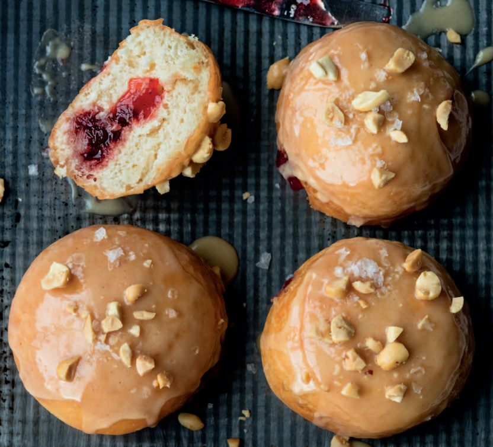

Blackberry-Lemon
Jam–Filled Doughnuts
Jam– and jelly–filled doughnuts are typically treated to a dusting of
confectioners’ sugar. But you can instead use superfine sugar or vanilla
sugar (to make, bury 1 or 2 vanilla beans in 2 cups of sugar for 2 weeks).

Ingredients
- 1 recipe Basic Yeast
Doughnuts (page 18)
- 1⁄2 lb fresh or frozen
blackberries,
thawed if frozen
- 1 cup granulated sugar
- Zest and juice of 1 lemon
- 1⁄4 teaspoon salt
- All-purpose flour,
for dusting
- Canola oil, for frying
- 1⁄2 cup confectioners’
sugar
Steps
- Make the yeast doughnut dough and let rise until doubled
in size, about 1 hour. Meanwhile, in a bowl, toss together the
blackberries and granulated sugar; let stand for 20 minutes.
Transfer to a small saucepan, add the lemon zest and juice
and salt, and cook over low heat, stirring frequently, until
thickened, 20–25 minutes. Transfer to a bowl, let cool to
room temperature, cover, and refrigerate until ready to use.
For a smoother consistency, strain the jam through a fine-mesh sieve.
- Punch down the dough, turn it out onto a well-floured work
surface, and roll out 1
⁄2 inch thick. Using a 21
⁄2-inch round
cutter, cut out doughnuts. Transfer to a well-floured baking
sheet, cover lightly with plastic wrap or a kitchen towel, and
let rise in a warm spot until doubled in size, about 1 hour.
- To fry the doughnuts, see Successful Frying (page 14).
Heat the oil over medium-high until it registers 310–320°F
on a deep-frying thermometer. When the doughnuts are
cooked through (cut one open to test), 3–4 minutes per
side, use a slotted spoon to transfer to a cooling rack or
prepared baking sheet. Let cool for 15 minutes.
- Transfer the jam to a pastry bag and cut a 1
⁄4-inch opening.
Using a small, sharp knife, cut a slit into the side and
extending into the center of each doughnut. Insert the
cut tip into the slit to the center and pipe in a generous
1 tablespoon jam. Dust with confectioners’ sugar and serve.